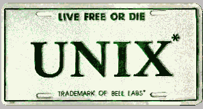

Me.
My name is Pierre-Marie, I'm 22, I live in Vendée (France), et puis voilà...
I like (in a fair mess) : arts, books, philosophy, music, italian bikes (foremost Ducati), two-stroke engine preparations, guitar, Jimi Hendrix's blues, rare beer, friends, good huge parties like those we do rarely, gutters after abusing Jack Daniels (dangerous for health), woman friends (the best ever for men), true mates (they'll recognize as themselves without problem), unusual people, winning lottery tickets, computing, cats, Mylène Farmer (french singer), psychology (e.g. Freud and Joung's deliriums), various electronic hacks, trips, Bach's music, big fat wreck rock sound, a woman's look, cow-boy hats, every people loving someone or something (that's to say I don't like racists) and anyone having something to say when politically correct recommends silence.

For the computing part, I do support the Open Content and Open Source influences and I am closely looking at the development of the world's best operating system (a free UNIX derived from 4.4BSD whose name is OpenBSD)...
I also have a small resume (in french), for those who are interested in...
I don't have time to. If you want to learn more about RACC, look at the code.
Accuracy Int. Arctic Warfare/Magnum (AWM)